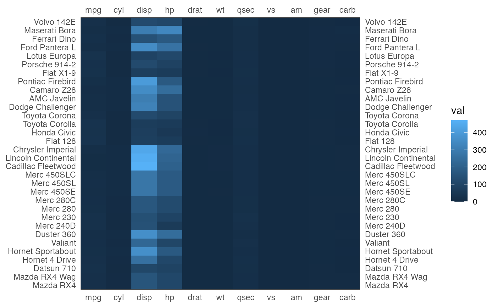

Easily plot a matrix as an heatmap using ggplot2
tgplot_heatmap(
mtrx,
col_names = NULL,
row_names = NULL,
xlab = NULL,
ylab = NULL,
plot_top = TRUE,
plot_right = TRUE,
interleave = FALSE,
col_names_orient = c("horizontal", "vertical", "slanted"),
col_names_color = "black"
)The matrix to be plotted
The names that will be used as the X-axis labels. A NULL (the defualt) indicates that the original matrix colnames are used. A FALSE indicates that no X-axis labels should be displayed.
The names that will be used as the Y-axis labels. A NULL (the defualt) indicates that the original matrix rownames are used. A FALSE indicates that no Y-axis labels should be displayed.
The X-axis label
The Y-axis label
Whether to put the X-axis labels at the top of the heatmap (as well as at the bottom)
Whether to put the Y-axis labels at the right side of the heatmap (as well as at the left hand side)
Plot the odd Y-Axis labels on the left side and the even on the right side
Orientation of the X-axis label
color of the column names
ggplot object with the matrix plot
tgplot_heatmap(as.matrix(mtcars))
